Wordmark library / 01
Aberration
Current product identity
The selected lowercase lettering, in aligned stacked and single-line layouts. Both keep the original paired-r mark and separate t and i.
01
Aligned / Two lines
All lowercase, with shared left and right edges.



02
Single line
The same original letterforms, with t and i set separately.



Custom lettering
Outlined vector shapes with square corners and consistent strokes. No font dependency.
Original mark
The approved symbol forms rr. Its geometry and proportions are preserved exactly.
Transparent SVGs
Black and white exports have transparent counters and backgrounds. Keep their aspect ratios and clear space.
Stacked / 160 px
Single line / 240 px